Training
One of my interests is in building bridges with different institutions that can promote future collaborations. I’m interested in exchanging ideas and knowledge with others. With contributions of different collaborators, I have created a couple of workshops that I have been offering since 2019.
Other topics for workshops might be available upon request.
Workshops can be offered in English and Spanish
Getting started with R studio for research and development
This is an introduction to R studio and how to integrate it for research. Some of the topics covered include:
- Project organization and version control
- Basics of R programming
- Basics of data visualization
- Using Rstudio to write your manuscripts and manage references
- Automate report generation.
R for statistical analysis
This workshop introduces on how to use R for statistical analysis. Some of the topics covered include:
- Hypothesis testing
- Which statistical method should I use?
- Regression analysis
- Data visualization
- Generation of reports
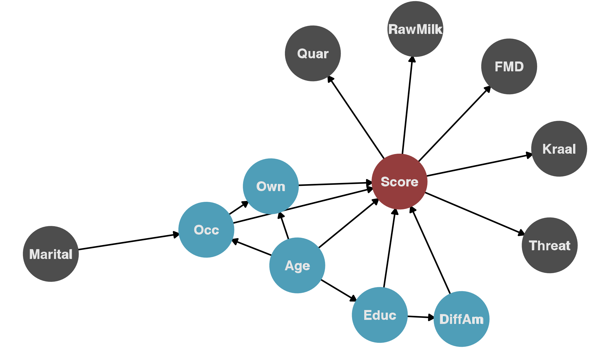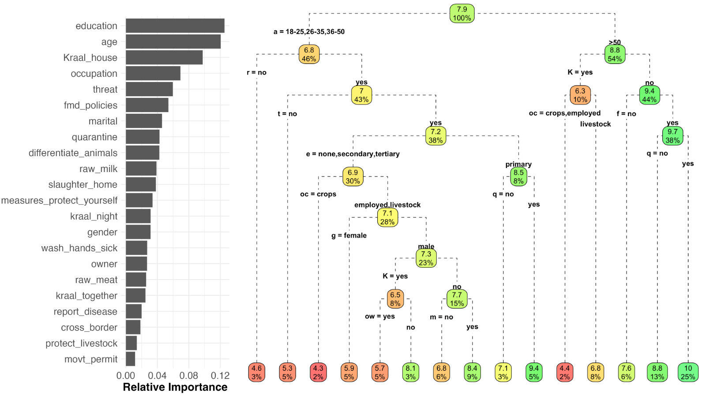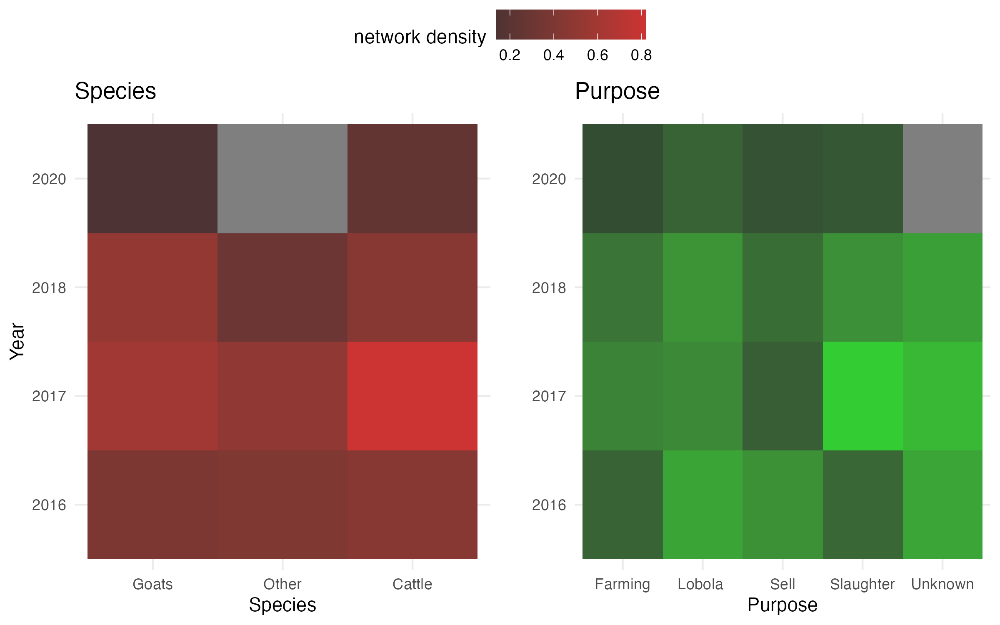
Developing interactive dashboards for data analysis and visualization
This workshop covers the basics on using shiny to develop interactive dashboards. The dashboards can be used for data visualization, analysis or collection of information. Some of the topics covered includes:
- Introduction to R shiny
- Generate static and interactive visualizations
- Strategies to make your dashboard more efficient
- Uploading your dashboard to a server so it can be shared and distributed.
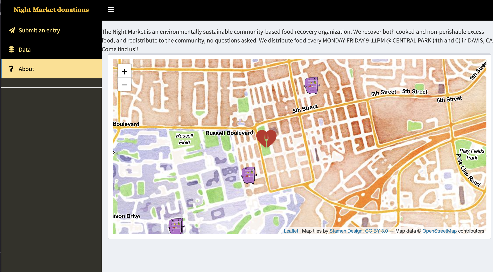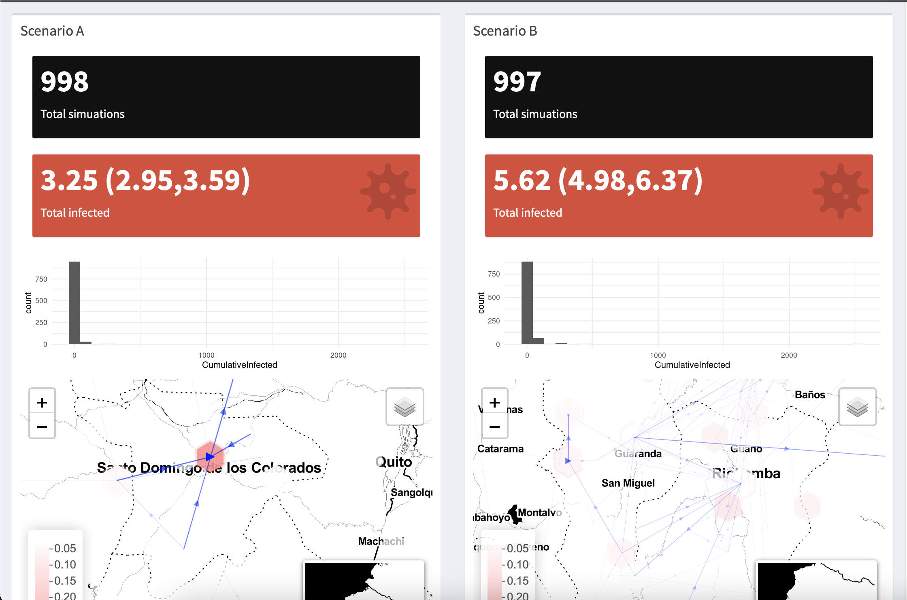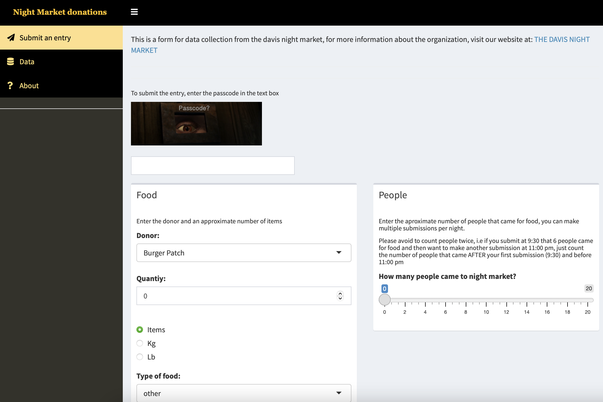
Geostatistical tools for Epidemiology
The aim of this workshop is to provide an overview of different tools to manipulate and analyse spatial data. Some of the topics covered include:
- Manipulation of databases.
- Statistical Inference.
- Manipulation of Spatial data.
- Spatial Autocorrelation
- Geostatistical tools for inference.
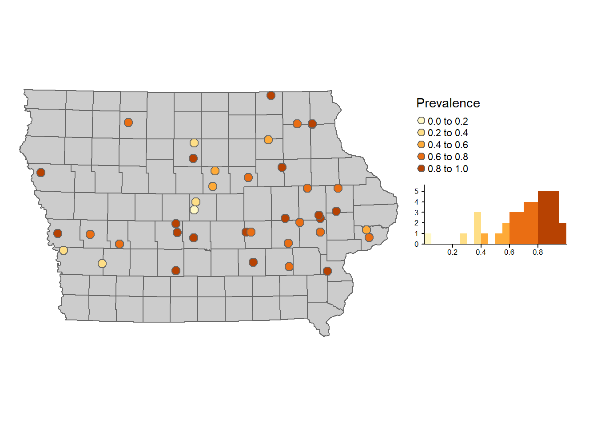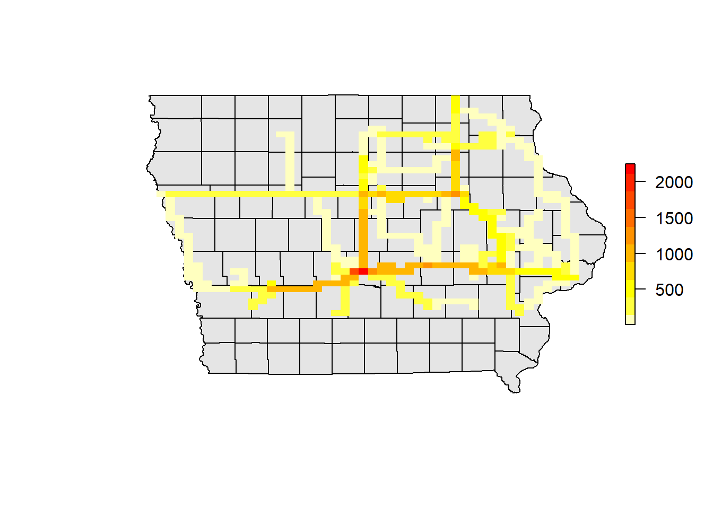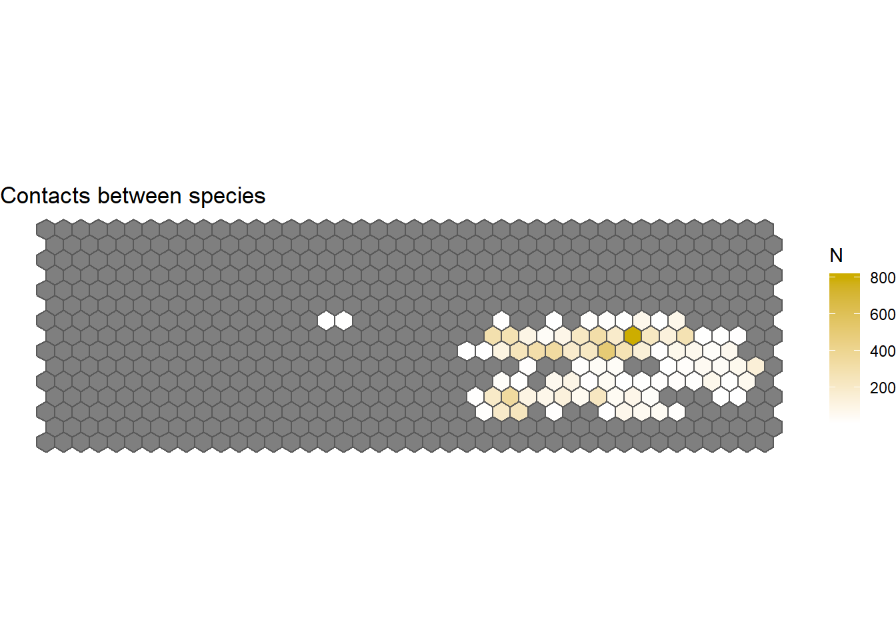
More information English | Spanish
Spatio-Temporal Analysis of Contact networks
This workshop covers the integration of Network Theory and spatio-Temporal tools for descriptive analysis and some inference of contact networks. Some of the topics covered in this workshop includes:
- Static and dynamic network analysis.
- Visualization of spatio-temporal networks.
- Network Based models and applications.
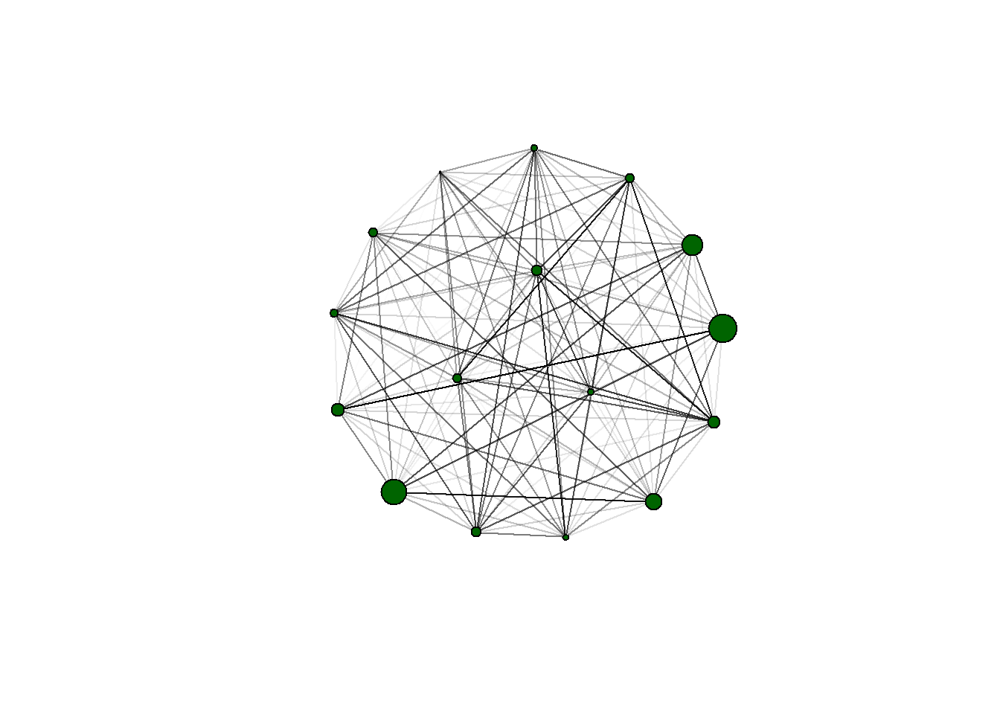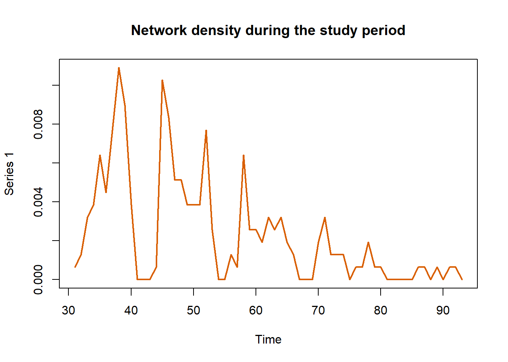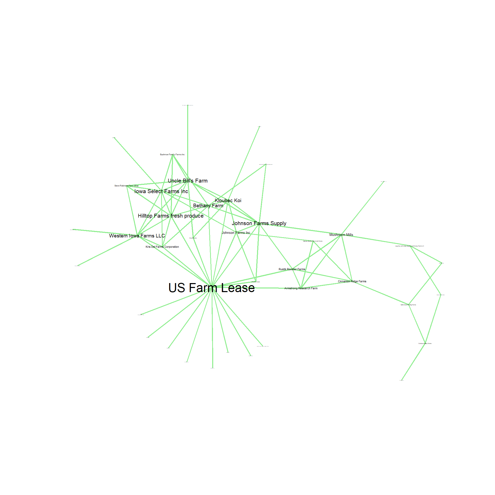
More information English | Spanish
More information is available upon request contacting: jpgo@ucdavis.edu